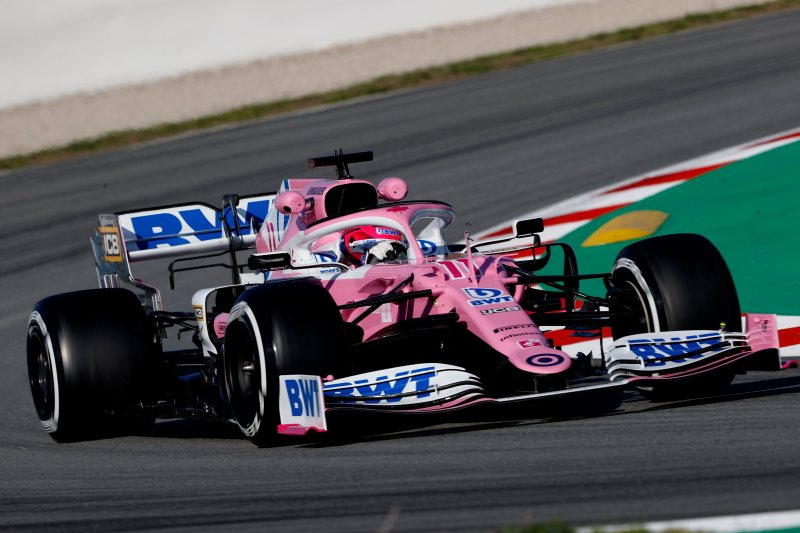

FIA porównuje "różowego Mercedesa" do W10
Gdy ekipa z Silverstone pierwszy raz pokazała RP20, wszyscy obserwatorzy mieli wrażenie, że gdzieś już widzieli takie kształty. W internecie szybko pojawiły się porównania do mistrzowskiego W10, a zaraz za nimi poszły oskarżenia o skopiowanie samochodu.